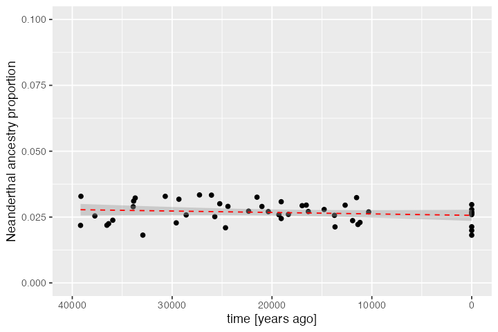

Tree-sequences processing and statistics
Source:vignettes/vignette-05-tree-sequences.Rmd
vignette-05-tree-sequences.RmdIn this vignette, we will show how to specify sampling events to record individuals in the tree-sequence output file (a procedure which is called “remembering” of individuals in the SLiM context) and how to perform simple analyses using slendr’s interface to the tskit Python library. We will demonstrate these features on a simulation of Neanderthal introgression into anatomically modern humans. Specifically, we will show how to estimate the amount of Neanderthal ancestry using \(f\)-statistics calculated directly on the tree-sequence data structure generated by a slendr model, all entirely from R.
Model of Neanderthal introgression into Eurasians
First, let’s set up a simple non-spatial model of Neanderthal introgression using slendr. This is essentially the same procedure which we have shown in another vignette introducing non-spatial slendr models. This is no different from a spatial model, except that we left out the map argument in calling population().
library(slendr)
# create the ancestor of everyone and a chimpanzee outgroup
# (we set both N = 1 to reduce the computational time for this model)
anc <- population("ANC", time = 6.5e6, N = 1)
chimp <- population("CH", parent = anc, time = 6e6, N = 1)
# two populations of anatomically modern humans: Africans and Europeans
afr <- population("AFR", parent = anc, time = 600e3, N = 10000)
eur <- population("EUR", parent = afr, time = 70e3, N = 5000)
# Neanderthal population splitting at 600 ky ago from modern humans
# (becomes extinct by 40 ky ago)
nea <- population("NEA", parent = anc, time = 600e3, N = 1000, remove = 40e3)
# 3% Neanderthal introgression into Europeans between 55-50 ky ago
gf <- geneflow(from = nea, to = eur, rate = 0.03, start = 55000, end = 50000)
model <- compile(
populations = list(anc, chimp, nea, afr, eur), geneflow = gf,
generation_time = 30,
dir = file.path(tempdir(), "introgression"), overwrite = TRUE
)Here’s our toy model visualized as a graph. Not particularly illuminating in this simple example, but it’s always worth keeping in mind that such graph is embedded within every slendr model and can be always invoked to make sure the model you’re setting up is correct:

Scheduling of sampling events
Now that we have defined a model, how do we sample data from it? Ideally, we would like to to schedule sampling events at a given time, sampling a defined number of individuals from a given population. This is why slendr provides a function sampling() which serves to define such sampling schedule automatically and enforces that only populations which are already (i.e. after their appearance in the simulation) or still (before they are removed from the simulation) present will be sampled from.
In our example, we want to sample two Neanderthal individuals (the older one being the Altai Neanderthal, the younger one Vindija Neanderthal). These two genomes are what we need to estimate Neanderthal ancestry proportion using a so-called \(f_4\)-ratio statistic (more on that below):
nea_samples <- sampling(times = c(70000, 40000), list(nea, 1))
nea_samples
#> # A tibble: 2 x 3
#> time pop n
#> <int> <chr> <int>
#> 1 70000 NEA 1
#> 2 40000 NEA 1As you can see, the sampling() function simply accepts the vector of times at which remembering should be schedule, and then a list of pairs (<slendr population>, <number of individuals>) encoding from which populations should how many individuals be remembered at time points given in the times vector.
Next, we want to sample some present-day individuals: an outgroup representing a chimpanzee, and a couple of Africans and Europeans:
present_samples <- sampling(times = 0, list(chimp, 1), list(afr, 5), list(eur, 10))
present_samples
#> # A tibble: 3 x 3
#> time pop n
#> <int> <chr> <int>
#> 1 0 CH 1
#> 2 0 AFR 5
#> 3 0 EUR 10As you can see above, the sampling() function returns a plain old data frame with a very simple structure with three columns: time, population name, and the number of individuals. This means that you can define sampling events using whatever input data you might already have available (such as radiocarbon-dated ancient DNA samples from an Excel sheet from some publication). For instance, there has been a lot of interest to estimate the trajectory of Neanderthal ancestry in Europe over time using ancient DNA data from anatomically modern human individuals (also called early modern humans, EMH) across the last couple of tens of thousands of years. We can simulate something close to the available EMH ancient DNA data set over the last 50 thousand years by running doing this:
emh_samples <- sampling(times = runif(n = 40, min = 10000, max = 40000), list(eur, 1))
emh_samples
#> # A tibble: 40 x 3
#> time pop n
#> <int> <chr> <int>
#> 1 16361 EUR 1
#> 2 29322 EUR 1
#> 3 16979 EUR 1
#> 4 22342 EUR 1
#> 5 37738 EUR 1
#> 6 25728 EUR 1
#> 7 28594 EUR 1
#> 8 18357 EUR 1
#> 9 20367 EUR 1
#> 10 24655 EUR 1
#> # … with 30 more rowsThis samples a single ancient European individuals at randomly chosen times between 40 and 10 ky ago.
One nice feature of the sampling() function is that it only schedules sampling events for a population, if that population is present in the simulation at a given time. This makes it possible to simply take a wide time range for sampling, specify all populations and sizes of the samples, and let the function generate sampling events only for populations present at each time. If for some reason a stricter control over sampling is required, this behavior can be switched off by setting strict = TRUE like this:
# this attempts to sample a Neanderthal individual at a point when Neanderthals
# are already extinct, resulting in an error
sampling(times = 10000, list(nea, 1), strict = TRUE)Error: Cannot schedule sampling for 'NEA' at time 10000 because the population will not be present in the simulation at that point. Consider running this function with `strict = FALSE` which will automatically retain only valid sampling events.Now that we already have the model object ready, we can simulate data from it, sampling individuals according to our sampling schedule. We do this by calling the slim() function as usual, but this time we set ts_recording = TRUE (which switches on the tree-sequence recording on the SLiM backend) and we specify the sampling events with the sampling = argument. Note that we bind the individual sampling schedule data frames using the rbind function provided by base R (as we show above, the sampling schedule really is just a data frame and we can manipulate it as such):
R interface for tskit and pyslim
The result of switching on ts_recording = TRUE in the slim() call above is that SLiM will save the output of the simulation as a tree sequence file. By default, the file is stored in the model directory:
ts_file <- file.path(model$path, "output_tree_seq.trees")
file.exists(ts_file)
#> [1] TRUETree-sequences are one of the most revolutionary developments in population genetics in the last couple of decades for a number of reasons. One of them is the possibility to store extremely large data sets succinctly by encoding the entire evolutionary history of a sample of individuals as a series of correlated tree genealogies along the genome.
Going into too much detail on this topic is clearly beyond the scope of this tutorial, especially because everything is explain much better elsewhere. Instead, what we will demonstrate in the rest of this vignette is how you can access and manipulate tree-sequence outputs generated by slendr models and perform various statistics on them using Python modules tskit and pyslim directly from slendr, without having to leave R! The key is a magical R package reticulate which creates a seamless binding of Python modules with R. This means that even if you don’t know Python, slendr allows you to do do quite a lot with tree-sequences in R.
Of course, if you are a proficient Python user, it needs to be said that once you have the tree-sequence file generated by slendr & SLiM, you can easily perform every conceivable analysis directly using tskit. The intention here is to show how you can continue working on the tree-sequence files in R even after you have run the entire slendr simulation.
First, in order to be able to interface with tskit and pyslim using the reticulate package, you will need a working Python environment with the required Python modules already installed. I personally manage Python installations and separate package environments using pyenv and pyenv-virtualenv. However, this is only my own personal preference. If you prefer using conda or any other Python management solution, feel free to use that. In any case, I recommend using tooling which is supported by reticulate itself, because it will be easy to find support should you run into any trouble.
For completeness, here is how I have just installed tskit and pyslim into a brand new environment on my Mac using pyenv, completely from scratch:
# 1. install the most recent version of Python (enforcing the compilation of
# Python as a shared library is important for the reticulate package to work,
# at least on a Mac)
env PYTHON_CONFIGURE_OPTS="--enable-shared" pyenv install 3.9.6
# create a separate Python environment dedicated to our R/Python interface
# and call it 'retipy'
pyenv virtualenv 3.9.6 retipy
# install required Python modules into the environment
pyenv activate retipy
pip install tskit pyslimNow we can instruct the reticulate package to use the newly created Python environment:
reticulate::use_virtualenv("~/.pyenv/versions/retipy", required = TRUE)We can make sure that reticulate is indeed using our environment by calling:
reticulate::py_config()
#> python: /Users/martin_petr/.pyenv/versions/3.9.6/envs/retipy/bin/python
#> libpython: /Users/martin_petr/.pyenv/versions/3.9.6/lib/libpython3.9.dylib
#> pythonhome: /Users/martin_petr/.pyenv/versions/3.9.6/envs/retipy:/Users/martin_petr/.pyenv/versions/3.9.6/envs/retipy
#> version: 3.9.6 (default, Jul 27 2021, 16:57:27) [Clang 12.0.0 (clang-1200.0.32.29)]
#> numpy: /Users/martin_petr/.pyenv/versions/3.9.6/envs/retipy/lib/python3.9/site-packages/numpy
#> numpy_version: 1.21.1
#> tskit: /Users/martin_petr/.pyenv/versions/3.9.6/envs/retipy/lib/python3.9/site-packages/tskit
#>
#> NOTE: Python version was forced by use_python functionSee this guide for more information about setting up R to work with different Python environment management tools, including conda.
Loading and processing tree-sequence output files
With the technicalities out of the way, we can now load the tree-sequence file saved by SLiM using the slendr function ts_load(). Optionally, we can also instruct this function to simplify the tree-sequence to only the individuals that we explicitly sampled (recall the sampling schedule we set up with the sampling() function above). What slendr does here is provide an R-friendly interface to tskit and pyslim, essentially reproducing steps in this tutorial in a single R command. Note that we have to provide the model object generated by compile() above in order to have all model annotation information for the simulated tree-sequence data (we have to do this only once, and only during loading):
ts <- ts_load(ts_file, model)
ts
#> ╔══════════════════════════╗
#> ║TreeSequence ║
#> ╠═══════════════╤══════════╣
#> ║Trees │ 101027║
#> ╟───────────────┼──────────╢
#> ║Sequence Length│10000000.0║
#> ╟───────────────┼──────────╢
#> ║Sample Nodes │ 30088║
#> ╟───────────────┼──────────╢
#> ║Total Size │ 2.1 GiB║
#> ╚═══════════════╧══════════╝
#> ╔═══════════╤════════╤═════════╤════════════╗
#> ║Table │Rows │Size │Has Metadata║
#> ╠═══════════╪════════╪═════════╪════════════╣
#> ║Edges │49685326│ 1.3 GiB│ No║
#> ╟───────────┼────────┼─────────┼────────────╢
#> ║Individuals│ 15044│941.7 KiB│ Yes║
#> ╟───────────┼────────┼─────────┼────────────╢
#> ║Migrations │ 0│ 4 Bytes│ No║
#> ╟───────────┼────────┼─────────┼────────────╢
#> ║Mutations │ 0│ 1.2 KiB│ No║
#> ╟───────────┼────────┼─────────┼────────────╢
#> ║Nodes │12656549│410.4 MiB│ Yes║
#> ╟───────────┼────────┼─────────┼────────────╢
#> ║Populations│ 5│ 3.1 KiB│ Yes║
#> ╟───────────┼────────┼─────────┼────────────╢
#> ║Provenances│ 1│ 28.5 KiB│ No║
#> ╟───────────┼────────┼─────────┼────────────╢
#> ║Sites │ 0│ 8 Bytes│ No║
#> ╚═══════════╧════════╧═════════╧════════════╝We can see that the tree-sequence data is very large and contains many more individuals than we need (much more than we explicitly specified for sampling): there are in total 15044 individuals in the tree-sequence which is a lot more than the 58 we scheduled for sampling! To avoid this issue, ts_load() accepts an optional argument simplify which triggers the simplification process to narrow down the set of recorded individuals just to those that we explicitly remembered:
ts <- ts_load(ts_file, model, simplify = TRUE)Similarly, slendr provides a function ts_recapitate() which performs recapitation. Again, we can do this in one go, by specifying recapitate = TRUE in the call to ts_load() after specifying a couple of additional arguments required for recapitation (see the pyslim documentation in the recapitation section for more detail):
ts <- ts_load(ts_file, model, recapitate = TRUE, simplify = TRUE,
recombination_rate = 1e-8, Ne = 10000)If we were to run this code chunk, we would get a message informing that the recapitation was not necessary because all genealogies in the tree-sequence are already coalesced (i.e. have each only one root node). We can do this check ourselves by calling another slendr function ts_coalesced() which verifies that all trees in the sequence are fully coalesced:
ts_coalesced(ts)
#> [1] TRUEYou might have noticed that we did not simulate any mutations during the SLiM run. This is for computational efficiency. Luckily, the tree-sequence contains the complete history of a sample of individuals which makes it very easy to sprinkle mutations on the genealogies after this simulation is over. We can add mutations a given rate by running:
ts <- ts_mutate(ts, mutation_rate = 1e-8, random_seed = 314159)Having done that, we can calculate some basic statistics on our simulated data.
However, before we do that, we would first like to note that everything that we do in the rest of this vignette (i.e. whenever we call a function with the prefix ts_*() in slendr), we are interfacing with the tskit Python module under the hood. Our goal is to capture most of the analyses one might want to perform on tree-sequences in R and wrap them in a neat interface indistinguishable from any other R function—this is, after all, the reason why reticulate has been created in the first place (making various Python data science modules appear as if they were regular R packages).
Calculating f-statistics
In addition to being a revolutionary breakthrough in terms of computation efficiency, many statistics that we are often interested in population genetics are a natural consequence of having a direct access to tree sequence genealogies, simply because those genealogies capture the true demographic history of a sample. Again, we can’t go into too much detail here but we encourage you to take a look at a paper by Ralph et al. on the duality between statistics expressed in terms of branch lengths and the traditional summaries based on samples of genetic variation.
For instance, we have functions such as ts_f2(), ts_f3(), ts_f4() and ts_f4ratio() which calculate the well-known set of Patterson’s \(f\)-statistics:
# f2 is a measure of the branch length connecting A and B
ts_f2(ts, A = "EUR1", B = "EUR2")
#> # A tibble: 1 x 3
#> A B f2
#> <chr> <chr> <dbl>
#> 1 EUR1 EUR2 -0.00000935
# f4 is a measure of the drift shared between A and B after their split from C
ts_f3(ts, A = "EUR1", B = "AFR1", C = "CH1")
#> # A tibble: 1 x 4
#> A B C f3
#> <chr> <chr> <chr> <dbl>
#> 1 EUR1 AFR1 CH1 0.000000925
# this value should be very close to zero (no introgression in Africans)
ts_f4(ts, "AFR1", "AFR2", "NEA1", "CH1", mode = "branch")
#> # A tibble: 1 x 5
#> W X Y Z f4
#> <chr> <chr> <chr> <chr> <dbl>
#> 1 AFR1 AFR2 NEA1 CH1 0.0145
# this value should be significantly negative (many more ABBA sites
# compared to BABA site due to the introgression into Europeans)
ts_f4(ts, "AFR1", "EUR1", "NEA1", "CH1", mode = "branch")
#> # A tibble: 1 x 5
#> W X Y Z f4
#> <chr> <chr> <chr> <chr> <dbl>
#> 1 AFR1 EUR1 NEA1 CH1 -595.These functions accept a mode = argument, specifying whether the statistics should be calculated using mutation site patterns (mode = "site", the default), branch lengths (mode = "branch"), or for each node (mode = "node"), as well as the windows argument, similarly to other “multiway” statistics implemented by tskit. See the relevant sections of the official tskit documentation for more on this topic.
Estimating Neanderthal ancestry proportions
Let’s try to put these new tools to practice and estimate the proportion of Neanderthal ancestry in Africans and Europeans in our simulated data. We can do this using the Patterson’s \(f_4\)-ratio statistic implemented in the ts_f4ratio() function in slendr (you can find more information about this particular version of the statistic in this paper):
# first get a table of simulated African and European individuals in the tree-sequence
inds <- ts_individuals(ts) %>% dplyr::filter(pop %in% c("AFR", "EUR"))
# estimate the amounts of Neanderthal ancestry in these individuals and add
# these values to the table
inds$ancestry <- ts_f4ratio(ts, X = inds$name, "NEA1", "NEA2", "AFR1", "CH1")$alphaIf we now summarise the inferred Neanderthal distribution in both populations, we see that there is no Neanderthal ancestry in Africans (as expected by our model–Africans did not receive a Neanderthal introgression pulse) but there is around 3% Neanderthal ancestry in Europeans (consistent with the 3% introgression pulse we simulated between 5.5{4}-5{4} thousand years [ky] ago):
ggplot(inds, aes(pop, ancestry, fill = pop)) +
geom_boxplot() +
geom_jitter() +
labs(y = "Neanderthal ancestry proportion", x = "") +
theme(legend.position = "none") +
coord_cartesian(ylim = c(0, 0.1))
This is exactly as we specified in the model configuration above, suggesting that our simulations work as they should. You can see that there is quite a bit of noise but that’s because we simulated only 10 Mb of sequence.
We can also plot the trajectory of Neanderthal ancestry in Europe during the time-window for which we have simulated ancient and present-day DNA samples:
dplyr::filter(inds, pop == "EUR") %>%
ggplot(aes(time, ancestry)) +
geom_point() +
geom_smooth(method = "lm", linetype = 2, color = "red", size = 0.5) +
xlim(40000, 0) + coord_cartesian(ylim = c(0, 0.1)) +
labs(x = "time [years ago]", y = "Neanderthal ancestry proportion")
#> `geom_smooth()` using formula 'y ~ x'
Again, this is a result consistent with empirical estimates of Neanderthal ancestry using ancient DNA data.
ADMIXTOOLS analyses
In case you would like to verify some f-statistics results using the venerable ADMIXTOOLS software (see the linked paper which formally introduced these statistics in the first place), you can convert the tree-sequence data to a file format called EIGENSTRAT using the ts_eigenstrat() function. The file conversion is internally handled by the R package admixr and returns an EIGENSTRAT object which ties all individual EIGENSTRAT file components together (see the tutorial to admixr for an extensive overview). admixr is an R package for running automated ADMIXTOOLS analyses entirely from R and makes these types of analyses very convenient.
snps <- ts_eigenstrat(ts, prefix = file.path(tempdir(), "eigenstrat", "data"))
#> 157 mutations (out of 58245) have been removed because they appeared on a position already occupied by another mutation. This is a consequence of mutations positions in tskit being in floating-point values but normal genomic locations being integer values.Running an admixr analysis is then as easy as plugging the object into an admixr function. For instance, we can estimate the proportion of Neanderthal ancestry in a couple of individuals \(X\) like this (admixr calls this proportion alpha):
library(admixr)
f4ratio(data = snps, X = c("EUR1", "EUR2", "AFR2"),
A = "NEA1", B = "NEA2", C = "AFR1", O = "CH1")
#> # A tibble: 3 x 8
#> A B X C O alpha stderr Zscore
#> <chr> <chr> <chr> <chr> <chr> <dbl> <dbl> <dbl>
#> 1 NEA1 NEA2 EUR1 AFR1 CH1 0.0401 0.0396 1.01
#> 2 NEA1 NEA2 EUR2 AFR1 CH1 0.00723 0.00604 1.20
#> 3 NEA1 NEA2 AFR2 AFR1 CH1 0 0 NaNIn fact, lets compare the values obtained by both tskit and admixr/ADMIXTOOLS for all individuals:
# tskit result
result_ts <- ts_f4ratio(ts, X = inds$name, A = "NEA1", B = "NEA2", C = "AFR1", O = "CH1") %>% dplyr::select(alpha_ts = alpha)
# result obtained by admixr/ADMIXTOOLS
result_admixr <- f4ratio(snps, X = inds$name, A = "NEA1", B = "NEA2", C = "AFR1", O = "CH1") %>% dplyr::select(alpha_admixr = alpha)
dplyr::bind_cols(result_ts, result_admixr) %>%
ggplot(aes(alpha_ts, alpha_admixr)) +
geom_point() +
geom_abline(slope = 1, linetype = 2, color = "red", size = 0.5) +
labs(x = "f4-ratio statistic calculated with admixr/ADMIXTOOLS",
y = "f4-ratio statistic calculated with tskit")
The correspondence between the two looks good! 🎉 Again, note that the large amount of variance around the expected value of 3% ancestry is due to an extremely small data simulated here (only 10 Mb of sequence).
VCF output
In case you need to process simulated data in some other software, you can use the function ts_vcf() to save the simulated genotypes in a VCF format:
You can also specify only a subset of individuals to be saved in the VCF:
Other statistics
What follows is a very brief overview of other statistics which are implemented in tskit and for which slendr provides an easy-to-use R interface. As you will see, the goal of these functions is to get you to a result using a single function call, making them very convenient for quick interactive exploratory analyses on the simulated data right in the R console.
We will continue to use our simulated Neanderthal introgression tree-sequence data for these examples.
\(F_{st}\)
The \(F_{st}\) statistic is implemented by the function ts_fst().
If a single genome-wide \(F_{st}\) is to be calculated (i.e. not a window-based calculation), the ts_fst() returns a simple three-column data frame
ts_fst(ts, sample_sets = list(afr = c("AFR1", "AFR2", "AFR3"), eur = c("EUR1", "EUR2")))
#> # A tibble: 1 x 3
#> x y Fst
#> <chr> <chr> <dbl>
#> 1 afr eur 0.0470In case a non-named list of sample sets was provided, set names are generated automatically:
ts_fst(ts, sample_sets = list(c("AFR1", "AFR2", "AFR3"), c("EUR1", "EUR2")))
#> # A tibble: 1 x 3
#> x y Fst
#> <chr> <chr> <dbl>
#> 1 set_1 set_2 0.0470Of course, this is much less readable and we encourage you to name the sample sets appropriately.
In case more than two sample sets are specified, all pairwise statistics are computed:
ts_fst(ts, sample_sets = list(afr = c("AFR1", "AFR2", "AFR3"),
eur = c("EUR1", "EUR2"),
nea = c("NEA1", "NEA2")))
#> # A tibble: 3 x 3
#> x y Fst
#> <chr> <chr> <dbl>
#> 1 afr eur 0.0470
#> 2 afr nea 0.429
#> 3 eur nea 0.424As with many other statistics implemented by tskit, ts_fst() accepts a windows argument, specifying the breakpoints between windows. In this case, the Fst column in the resulting data frame is a so called “list-column”, with each item in the column being a vector of \(F_{st}\) values, one per each window. List-columns can be a little confusing for new R users, but we highly encourage you to get used to them as they allow extremely consise and elegant handling of structured data within normal data frames (you can start with this introduction).
# define breakpoints between 20 windows
breakpoints <- seq(0, ts$sequence_length, length.out = 21)
# calculate window-based Fst statistic
win_fst <- ts_fst(ts, windows = breakpoints,
sample_sets = list(afr = c("AFR1", "AFR2", "AFR3"),
eur = c("EUR1", "EUR2"),
nea = c("NEA1", "NEA2")))
# we get 20 values for each parwise calculation
win_fst
#> # A tibble: 3 x 3
#> x y Fst
#> <chr> <chr> <named list>
#> 1 afr eur <dbl [20]>
#> 2 afr nea <dbl [20]>
#> 3 eur nea <dbl [20]>For instance, here are window-based \(F_st\) values for the afr-vs-eur calculation (first row of the table above):
win_fst[1, ]$Fst
#> $`1`
#> [1] 0.020268590 0.019438715 0.056057386 0.059472483 0.038384878
#> [6] 0.039775325 0.029356652 0.031364969 0.008738394 0.020464449
#> [11] 0.080151127 0.018349165 -0.002897865 0.034181721 0.050713253
#> [16] 0.028920045 0.141543108 0.091882124 0.073062345 0.126293996Tajima’s \(D\)
The function ts_tajima() has nearly the same interface as ts_fst() shown above.
If a non-window version is to be calculated, we get a single genome-wide values for each sample set (named or non-named list of character vectors with individual names):
ts_tajima(ts, list(afr = c("AFR1", "AFR2", "AFR3"), eur = c("EUR1", "EUR2")))
#> # A tibble: 2 x 2
#> set D
#> <chr> <dbl>
#> 1 afr -0.223
#> 2 eur -0.0971For window-based version, the function returns the D column as a list column of vectors with \(i\)-th element being the Tajima’s D value for the \(i\)-th window:
Diversity
We can calculate diversity within given groups of individuals with the function ts_diversity(). For instance, even in our extremely simplified example, we would expect the highest levels of diversity in Africans, followed by Europeans, Neanderthals and the “degenerate” single individual outgroup “chimpanzee”. Is this true? Let’s find out.
First we extract individuals from all populations, creating a list of character vectors for each group (which is what functions such as ts_diversity() expects as an input):
# get individuals from all populations
sample_sets <- ts_individuals(ts) %>%
split(., .$pop) %>%
lapply(function(pop) pop$name)
sample_sets
#> $AFR
#> [1] "AFR1" "AFR2" "AFR3" "AFR4" "AFR5"
#>
#> $CH
#> [1] "CH1"
#>
#> $EUR
#> [1] "EUR1" "EUR2" "EUR3" "EUR4" "EUR5" "EUR6" "EUR7" "EUR8" "EUR9"
#> [10] "EUR10" "EUR11" "EUR12" "EUR13" "EUR14" "EUR15" "EUR16" "EUR17" "EUR18"
#> [19] "EUR19" "EUR20" "EUR21" "EUR22" "EUR23" "EUR24" "EUR25" "EUR27" "EUR26"
#> [28] "EUR28" "EUR29" "EUR30" "EUR31" "EUR32" "EUR33" "EUR34" "EUR35" "EUR36"
#> [37] "EUR37" "EUR38" "EUR39" "EUR40" "EUR41" "EUR42" "EUR43" "EUR44" "EUR45"
#> [46] "EUR46" "EUR47" "EUR48" "EUR49" "EUR50"
#>
#> $NEA
#> [1] "NEA1" "NEA2"Now we can calculate diversity in each population and sort the results in an increasing order of diversity:
ts_diversity(ts, sample_sets) %>% dplyr::arrange(diversity)
#> # A tibble: 4 x 2
#> set diversity
#> <chr> <dbl>
#> 1 CH 0.0000001
#> 2 NEA 0.0000461
#> 3 EUR 0.000243
#> 4 AFR 0.000254Great! This matches our expectations. We simulated chimp “population” as only one individual, so we expect essentially no diversity after millions of years of evolution. This is consistent with the CH1 individual having no heterozygous sites which we can verify by running.
ts_genotypes(ts) %>%
dplyr::filter(CH1_chr1 != CH1_chr2) %>%
nrow()
#> [1] 1This code chunk extracted the simulated genotypes of all chromosomes from the tree-sequence and then counted at how many loci is the simulated “chimpanzee” heterozygous (the answer is zero, as expected by the extremely unrealistic population history that we specified above to reduce computation time).
Divergence
We can calculate pairwise divergence between groups of individuals using the function ts_divergence(). Given our model, we would expect the lowest divergence between the two modern human groups AFR and EUR, then between Neanderthals and the two modern humans, and all three groups (AFR, EUR and NEA) should have equal, much deeper divergence from the outgroup chimpanzee CH.
ts_divergence(ts, sample_sets) %>% dplyr::arrange(divergence)
#> # A tibble: 6 x 3
#> x y divergence
#> <chr> <chr> <dbl>
#> 1 AFR EUR 0.000281
#> 2 EUR NEA 0.000370
#> 3 AFR NEA 0.000384
#> 4 CH NEA 0.00396
#> 5 CH EUR 0.00397
#> 6 AFR CH 0.00398After sorting the table based on the value in the divergence column, we can see the results fit our expectations.
More information
These were only a couple of examples of statistical functions implemented in tskit for which we provide a native R interface in slendr. You can find more tree-sequence statistics in the reference manual on the project website. Not all statistics from the tskit library are implemented, but we intend to expand the selection provided by slendr in the near future. If there is some functionality that you would like to use in your project missing in slendr, please don’t hesitate to let us now by creating an issue on our GitHub page.